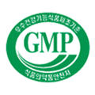
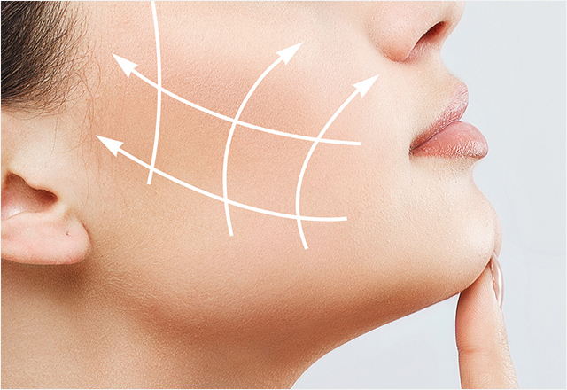
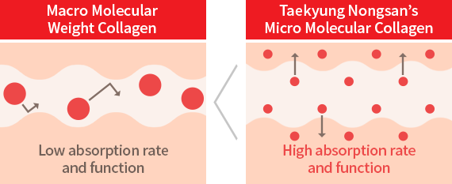
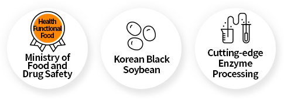
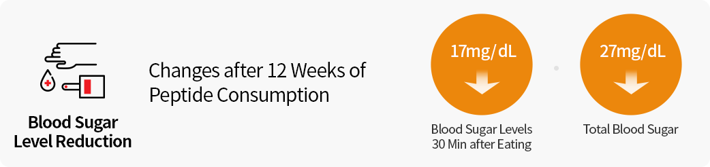
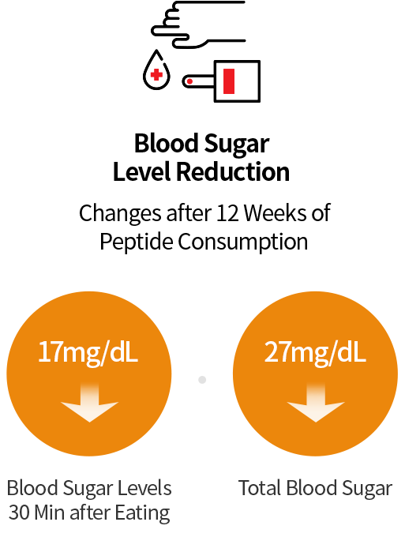
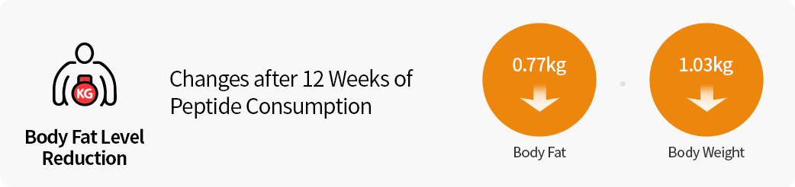
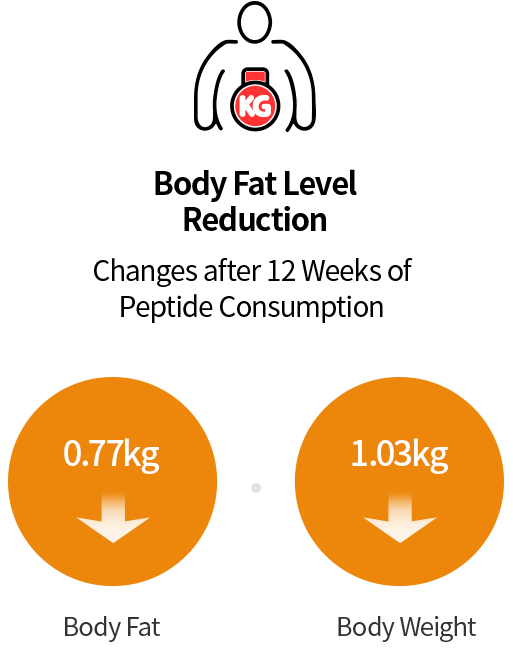
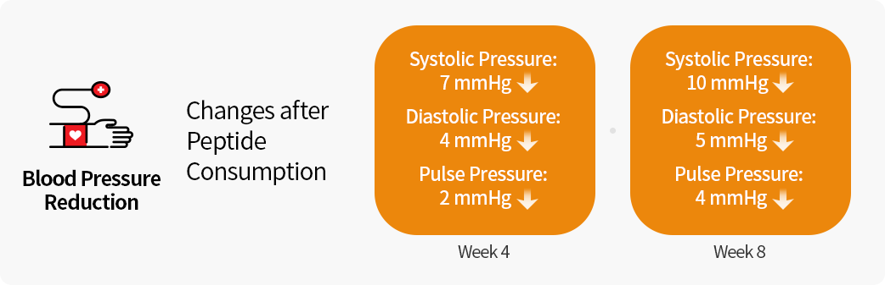
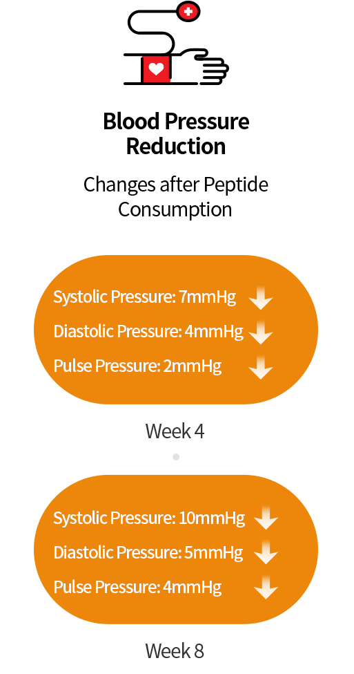

- About
- Business Solution
-
Brand
Brand
-
Customer Service
Customer ServiceNEW

Spicy Stewed Pork RibsBRAND
PLANT BASED
Business Solution
We offer business solutions customized to the success of our clients.
Health
Functional Food
Enriching lives through
health functional food
-
We develop health functional food through our Good Manufacturing Practice (GMP) certified facilities and systems to provide solutions toward healthier lifestyles.
- 
-
- Micro Molecule Collagen Peptide NS
-
The first fish-derived functional collagen material developed purely with Korean technology is certified as a health functional food by the Ministry of Food and Drug Safety(MFDS).
It helps keep the skin healthy and protects the skin from ultraviolet(UV) rays.Health Functional Food - Ministry of Food and Drug Safety, Fish Collagen, Micro Molecular Collagen
-
The First to Be
Made by Korean Technology The MFDS-certified functional collagen is the first to be developed using Korean technology.
Gly-pro
Same Structure with Skin Cells Being identical to the structure of human skin cells allows it to be delivered directly to the skin. -
173 Da
Smallest Molecular Mass It has the smallest molecular mass among collagen materials in Korea at 173 Da (dalton) (in 2020).  Macro Molecular Weight Collagen - Low absorption rate and function > Taekyung Nongsan’s Micro Molecular Collagen - High absorption rate and function
- Clinical Trials Results
-
-
Week 4
MoisturizingExfoliating
-
Week 8
Improving
skin firmness -
Week 12
Reducing
eye wrinkles
-
Week 4
- *Testing agency:COREDERM Inc. (12-week testing for 112 males and females aged 25–60)
- *Clinical trial results might not be applicable to all.
-
- Black Soybean (Rhynchosiavolubilis Lour) Peptide
-
This material was made through extraction and enzyme processing of Korean black soybeans (Rhynchosia volubilis Lour) and is certified as a health functional food by the Ministry of Food and Drug Safety(MFDS).
Its highly functional peptide content makes it potentially effective for the treatment of hypertension, control of blood sugar levels, and reduction of body fat. Health Functional Food - Ministry of Food and Drug Safety, Korean Black Soybean, Cutting-edge Enzyme Processing
- Clinical Trials Results
-
-   [Blood Sugar Level Reduction] - Changes after 12 Weeks of Peptide Consumption : Blood Sugar Levels 30 Min after Eating(17mg/Dl), Total Blood Sugar(27mg/Dl)
-   [Body Fat Level Reduction] - Changes after 12 Weeks of Peptide Consumption : Body Fat(0.77kg), Body Weigh(1.03kg)
-   [Blood Pressure Reduction] Changes after Peptide Consumption(week 4): Systolic Pressure 7mmHg, Diastolic Pressure 4mmHg, Pulse Pressure 2mmHg Changes after Peptide Consumption(week 8): Systolic Pressure 10mmHg, Diastolic Pressure 5mmHg, Pulse Pressure 4mmHg
- *Source:Clinical Trial Result Report(November 2011, Professor Jong-ho Lee, Yonsei University),
Food & Function (2012)/Academic Journal,
“Food and Function‘, Hypertension Research(2013), 1–7/Academic Journal, “Hypertension Research” - *Clinical trial results might not be applicable to all.
-
- Fermented Kelp Extract
-
This material was made by forming GABA with Korean kelp through a high-end fermentation process and is certified as a health functional food by the Ministry of Food and Drug Safety(MFDS).
It can potentially help protect the liver from alcohol-induced damages and improve memory.Health Functional Food - Ministry of Food and Drug Safety, Korean Kelp, utting-edge Fermentation Technology
-
Improves Liver
Function Can help prevent alcohol damage in liver, improve liver function, and mitigate hangovers -
Improves
Memory Can help improve memory through GABA materials formed from kelp
- Clinical Trials Results
-
-
Protects liver from
alcohol-induced damageDecreases liver damage indicators, such as GGT, AST, ALT, BUN levels -
Increases antioxidant
enzyme levelsIncreases antioxidant enzymes in blood, such as SOD, CAT, GPx, GSR -
ncreases brain-
derived neurotrophic
factor (BDNF)Increases BDNF levels, which promote brain neuron growth, formation of neural circuit, and memory -
Improves
memoryInduces a positive effect on general cognitive functions, language and general intelligence, sensory memory, and orking memory
-
-
*Source:
Clinical Trial Result Report(July 2011, Jung-il Kim, Dong-A University Hospital Faculty of Occupational Medicine)
Clinical Trial Result Report (2016, Je-kwang Ryu, Seoul National University Institute for Cognitive Science)
Clinical Trial Result Report(June 2017, Je-kwang Ryu, Seoul National University Institute for Cognitive Science) - *Clinical trial results might not be applicable to all.